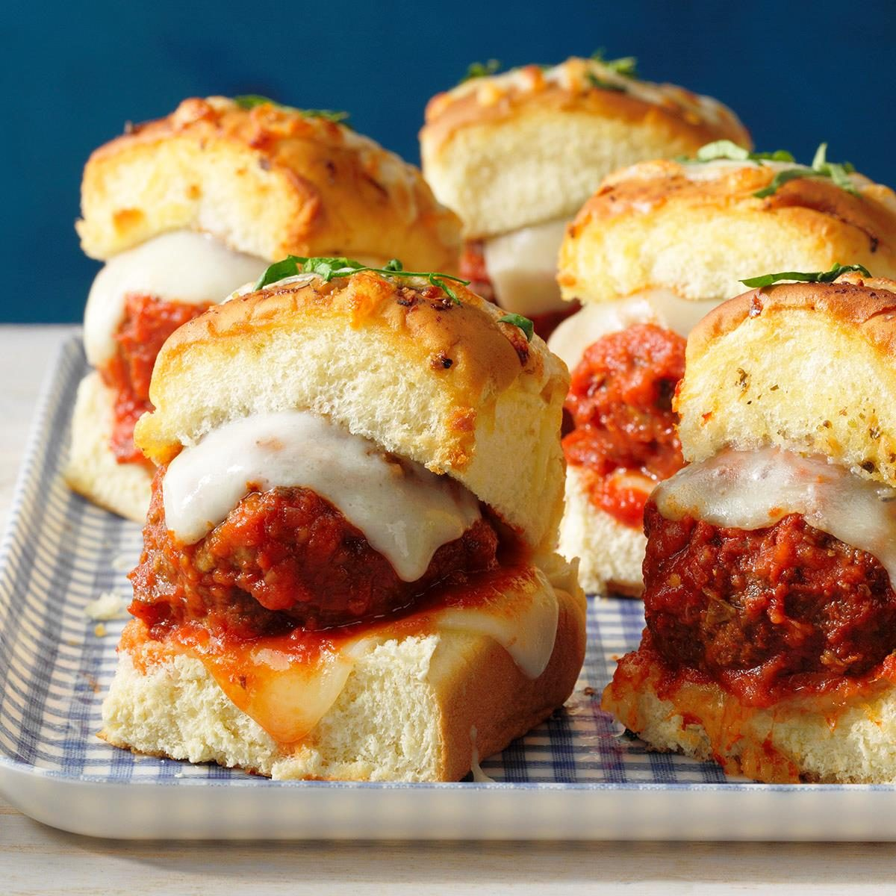

Description
These easy homemade meatball sliders are one of our newest favorites. They’re simple, can be on the table fairly quickly and they taste great!
Ingreendients:
- 1/8 Teaspoon Garlic Powder
- 1 Egg, Beaten
- 12 Slider Buns
- 1 Jar Spaghetti Sauce
- 1 Package Provalone Cheese
- 1 Pound Ground Beef
- 1 Cup Italian Bread Crumbs
- 1 Tablespoon Dried Parsley
- 1 Tablespoon Grated Parmesan Cheese
- 1/4 Teaspoon Ground Black Powder
Steps:
- Preheat oven to 350 degrees.
- Mix bread crumbs, parsley, parmesan, pepper and garlic powder in a large bowl. Add ground beef and the beaten egg. Mix well and use an ice cream scoop to form 12 meatballs.
- Bake for 15 to 20 minutes in the preheated oven, or until their internal temperature reaches 165 degrees. Pour the sauce in a pot and add the cooked meatballs and turn on low.
- Lower the temperature of the oven to 250 degrees. Slice your buns in half and bake them in the oven for 5 minutes.
- Top each bun with a meatball and sauce and then with 1/2 slice of cheese. Return to oven for 2-3 minutes to melt the cheese.
- Enjoy.